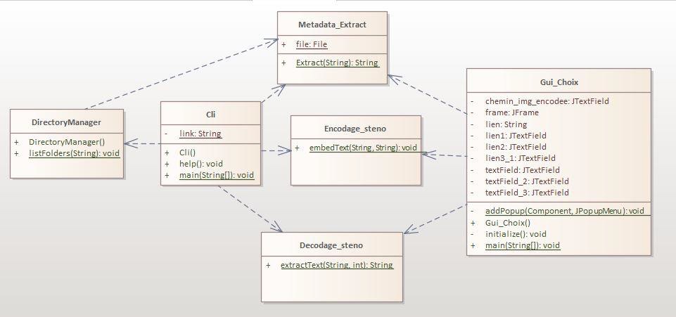

Travaux réalisés
Avant même de commencer à travailler à proprement parler sur le projet, nous avons dû nous l’approprier et saisir les enjeux expliqués dans la partie précédente. Ainsi, au début du mois de décembre nous avons eu 2 points d’avancement avec notre chargé de TD, au cours de ces deux entretiens nous avons convenu d’utiliser un outil que nous ne connaissons pas jusqu’alors : Projet Maven qui permet d’importer les bibliothèques externes nécessaires pour l’extraction des métadonnées.
Une fois achevée cette première phase d’analyse, parfois fastidieuse mais néanmoins indispensable, nous avons rédigé le cahier des charges ci-dessus et avons commencé à réaliser les fonctions attendues.
Diagramme UML
Extraction des métadonnées
Nous avions choisi de commencer par cette phase plutôt que par la stéganographie car il semblait plus simple et plus progressif au niveau de la difficulté de procéder ainsi. En effet, nous verrons qu’autant cette première phase s’est relativement bien déroulée, que la seconde s’est révélée moins difficile.
Il existe plusieurs méthodes envisageables pour effectuer l’extraction des métadonnées, pour notre classe nous avons choisi d’utiliser le projet Maven qui importera la bibliothèque externe « Metadata-Extractor » développée par « Drew Noakes », c’est à partir de cette bibliothèque que nous avons pu extraire les métadonnées des fichiers images.
Du fait de notre inexpérience dans les bibliothèques externes ainsi que l’utilisation du projet Maven, nous avons dû consacrer un temps relativement conséquent à cette phase.
Exploration des dossiers et des sous-dossiers
Notre seconde tâche était ensuite l’exploration des dossiers et sous-dossiers afin de lister tous les fichiers images PNG ou JPEG que ces derniers contiennent ainsi que leurs métadonnées, pour procéder à cela en mode console nous avons créé un tableau de fichiers où l’on a mis tous les fichiers existant dans le dossier indiqué, nous avons ensuite procéder à l’affichage des fichiers ayant une extension PNG ou JPEG uniquement à l’aide d’une boucle et d’un filtre en faisant appel à chaque fois à la classe «Metadata_Extract» afin d’afficher les métadonnées du fichier image. Concernant le mode graphique nous avons utilisé un«JFileChooser» avec des «FileNameExtensionFilter» afin d’afficher que les fichiers images souhaités, après que l’utilisateur ait choisit le fichier l’appel de la classe «Metadata_Extract» ainsi que l’affichage des métadonnées à l’endroit spécifié ce fera automatiquement.
Cli (Command line interface)
Il regroupe et exécute toutes les fonctions de l’application dans le terminal (l’extraction des métadonnées et la stéganographie) à l’aide des arguments (-f, -d, -e, -s) tapé par l’utilisateur.
Stéganographie
Pour l’encodage, on prend le dernier bit de l’image de chaque couleur composant la couleur de chaque pixel. On convertit le message en binaire puis on remplace les deux derniers bits du rouge du premier pixel par les deux premiers bits de l’information à cacher et on fait le même processus pour les autres couleur (RGB). A la fin de l’encodage il est impossible de voir de la différence des deux images (image avant la stéganographie et après).
Tout d’abord, on doit calculer la taille du message stocké. Par exemple, Le texte « geeksforgeeks » a 13 caractères. On parcourt les pixels de l’image un par un, et on stock le LSB (bit qui a le poids le plus faible) de chaque pixel dans un tableau. Ensuite on extrait le LSB des pixels requis et on prendra tous les 8 bits et les convertir au caractère correspondant et ça nous donne le texte qui a été codé.